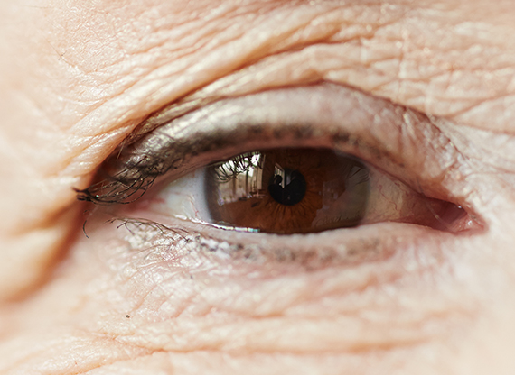
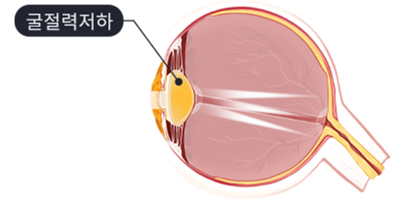
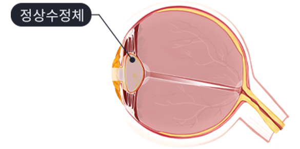
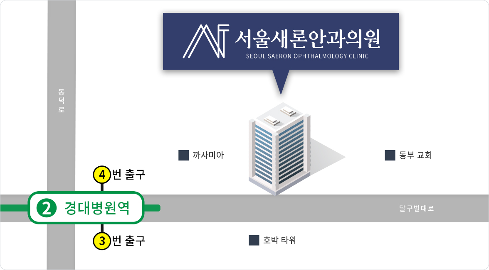

나이가 들면서 수정체가 탄력이 떨어지면서 조절작용이 원활하지 않게 되는 증상

노안은 나이가 들면서 눈의 조절력이 떨어져 눈으로부터
근거리인 25~35cm 정도에 있는 물체가 잘 보이지않는
상태를 말합니다.
대체로 40대가 넘어가면 수정체의 탄력이 떨어지고
두꺼워지며, 두께를 조절하는 모양체 근육의 힘도 떨어지게
됩니다.

노안

정상안
근거리 (신문,책,휴대폰 등) 흐리게 보임
먼 곳과 가까운 곳을 교대로 볼때 초점 전환이 느림
근거리를 오래 볼 경우 두통이 발생하는 현상
어두운 환경이나 피로할 경우 시력저하가 발생
돋보기를 착용할 경우 정확하게 보임
노안의 초기 증상은 신문이나 책을 읽는 거리가 점점 멀어지는 것이며,
가장 간단한 교정은 돋보기 착용입니다.
아래 항목들을 체크해보세요.

월 화 목 금
am 09:00 ~ pm 06:00토 요 일
am 09:00 ~ pm 04:00점 심 시 간
pm 01:00 ~ pm 02:00수요일, 일요일, 공휴일 휴무입니다.
공휴일 있는 주는 수요일 대체진료입니다.